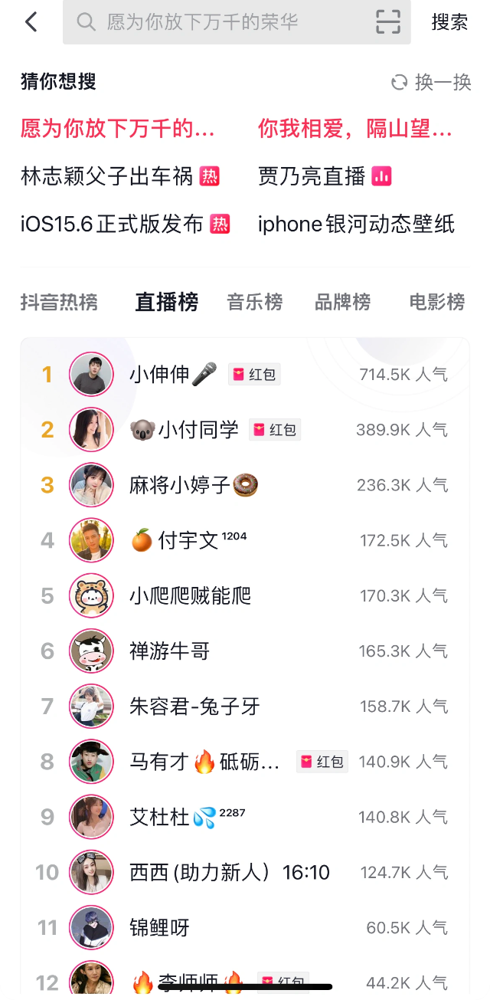
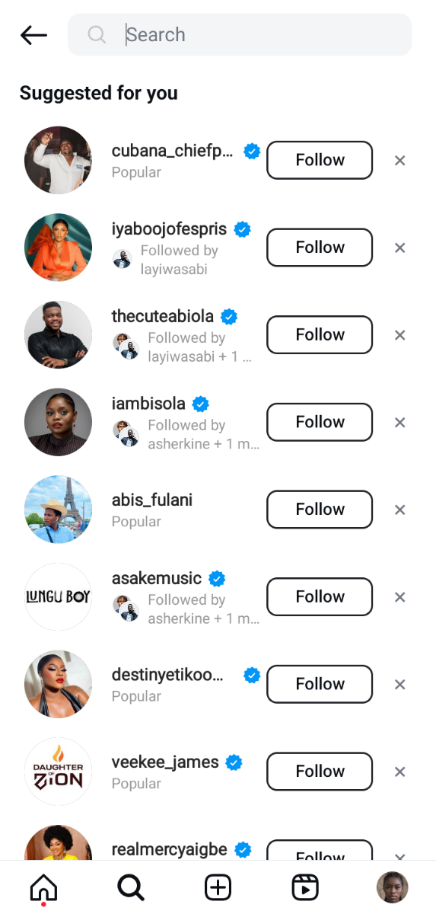
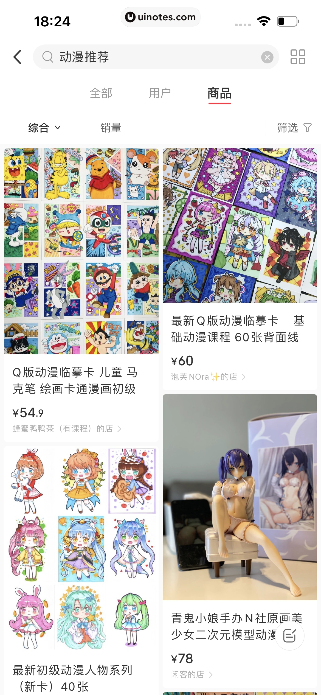
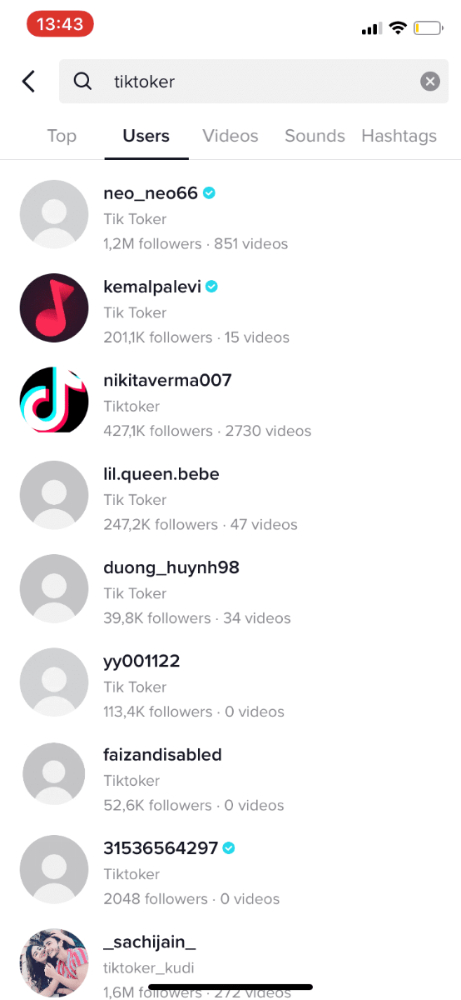
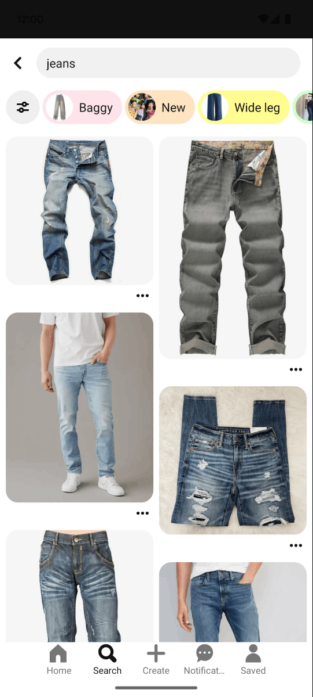

region: CN path_stage: 搜索发现 state: 输入前 page_role: 搜索发现 content_model: 热榜 + 猜你想搜 result_object: 榜单/主播
https://uinotes-img.oss-cn-shanghai.aliyuncs.com/image/origin-webp/773329410020957557.webp
比较国内外内容、社交、视觉灵感、音乐、阅读与电商产品在移动端搜索发现页、搜索结果页上的入口组织、内容类型分层、筛选切换和结果呈现机制，为搜索体验方向探索提供真实界面参考。
分类维度：用户搜索路径阶段 · 按用户是否已提交关键词划分搜索发现与搜索结果。本次只保留输入前搜索入口和已形成内容的搜索结果，不把素材质量不足的 Spotify 页面或 TikTok Sounds 加载态混入有效样本。 · 有效样本：5
用户尚未提交明确关键词时的搜索入口或发现内容，保留抖音与 Instagram 的输入前发现状态。

https://uinotes-img.oss-cn-shanghai.aliyuncs.com/image/origin-webp/773329410020957557.webp

https://pub-4271c874f759418fbdcd18b0e5cbe024.r2.dev/Instagram/Screenshot_20241108_112348.png
用户已提交关键词并看到实际结果内容的页面，保留小红书商品/内容结果、TikTok 用户结果和 Pinterest 视觉结果；不纳入 TikTok Sounds 加载态。

https://uinotes-img.oss-cn-shanghai.aliyuncs.com/image/origin-webp/533266064366173055.webp

https://templateshake.com/wp-content/uploads/2021/06/IMG_2422-1.png

https://storage.gummble.com/cdn-cgi/image/width%3D1920%2Cquality%3D75%2Cformat%3Dauto%2Cfit%3Dcover/prod/content/app_screens/2246c079-f316-4e30-b4b9-69b0a06f3da4.png